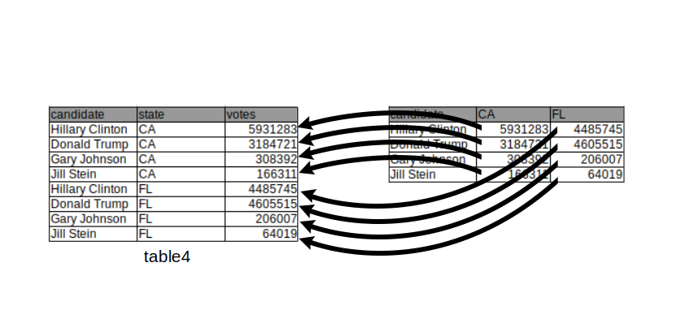

Chapter 3 Tidy data and combining tables
3.1 Introduction
3.1.1 Motivation
Without good practices, much of the time of a data analyst can be wasted in data wrangling rather than visualization or analysis. The concept of tidy data (Wickham 2014) addresses this issue by offering a standard representation of data, that is easy to manipulate, model and visualize. This chapter introduces the notion of tidy data and operations for tidying up messy datasets. Moreover, we describe how to easily concatenate tables with the same format and merge tables with common variables. This will set us ready for data visualization and analytics.
This chapter is partially adopted from “Introduction to Data Science” by Rafael A. Irizarry (https://rafalab.github.io/dsbook/) and uses concepts and material introduced by the developers of the tidyr package.
3.1.2 Datasets used in this chapter
The following code chunks load libraries and tables used throughout this chapter.
DATADIR <- "extdata"
election_results <- fread(
file.path(DATADIR, "US-pres16results.csv"),
na.strings=c("NULL", "NA"), encoding = "UTF-8", sep = ","
)
election_results <- election_results[
is.na(county) & st != "US",
.(cand, st, votes, total_votes)
]
setnames(election_results, "cand", "candidate")
setnames(election_results, "st", "state")
table1 <- fread(
file.path(DATADIR, "table1_alternate.csv"),
na.strings=c("NULL", "NA"), encoding = "UTF-8", sep = ","
)
table2 <- fread(
file.path(DATADIR, "table2_alternate.csv"),
na.strings=c("NULL", "NA"), encoding = "UTF-8", sep = ","
)
table3 <- fread(
file.path(DATADIR, "table3_alternate.csv"),
na.strings=c("NULL", "NA"), encoding = "UTF-8", sep = ","
)
table4 <- fread(
file.path(DATADIR, "table4_alternate.csv"),
na.strings=c("NULL", "NA"), encoding = "UTF-8", sep = ","
)
table5 <- fread(
file.path(DATADIR, "table5_alternate.csv"),
na.strings=c("NULL", "NA"), encoding = "UTF-8", sep = ","
) 3.2 Tidy and untidy data
3.2.1 Definition of tidy data
We say that a data table is in tidy format if:
- Each variable has its own column.
- Each observation has its own row.
- Each value has its own cell.
The following dataset from the 2016 US presidential vote1 is an example of a tidy dataset:
## candidate state votes total_votes
## 1: Hillary Clinton CA 5931283 9631972
## 2: Donald Trump CA 3184721 9631972
## 3: Gary Johnson CA 308392 9631972
## 4: Jill Stein CA 166311 9631972
## 5: Gloria La Riva CA 41265 9631972
## 6: Donald Trump FL 4605515 9386750Each row represents a state and a candidate with each of the four values related to these states stored in the four variables: candidate, state, votes, and total_votes.
3.2.2 Advantages of tidy data
Organizing data in a tidy fashion reduces the burden to frequently reorganize the data. In particular, the advantages are:
- Easier manipulation using
data.tablecommands such as sub-setting by rows and columns, as well asbyoperations - Vectorized operations become easier to use
- Many other tools work better with tidy data, including plotting functions, hypothesis testing functions, and modeling functions such as linear regression. These advantages will become striking in the following chapters.
3.2.3 Common signs of untidy datasets
Often, untidy datasets can be identified by one or more of the following issues (Wickham 2014):
- Column headers are values, not variable names
- Multiple variables are stored in one column
- Variables are stored in both rows and columns
- A single observational unit is stored in multiple tables
Wickham (2014) furthermore mentions “Multiple types of observational units stored in the same table” as a sign of untidy data. This point is discussed in Section 3.6.
3.3 Tidying up datasets
In this part of the chapter, we show how to transform untidy datasets into tidy ones. To this end, we will present some of the most often encountered untidy formats and present specific solutions to each of them.
3.3.1 Melting (wide to long)
One of the most used operations to obtain tidy data is to transform a wide table into a long table. This operation, which transforms a wide table into a long table is called melting, by analogy with melting a piece of metal. It is useful in particular when data is untidy because column headers are values, and not variable names.
As an example, consider the table below which reports vote counts for two US states, California and Florida. In this table, the column names CA and FL are values of the variable state. Therefore, we can say that this table is in an untidy format:
## candidate CA FL
## 1: Hillary Clinton 5931283 4485745
## 2: Donald Trump 3184721 4605515
## 3: Gary Johnson 308392 206007
## 4: Jill Stein 166311 64019
This can be achieved by using the data.table function melt():
melt(table4,
id.vars = "candidate",
measure.vars = c("CA", "FL"),
variable.name = "state",
value.name = "votes")## candidate state votes
## 1: Hillary Clinton CA 5931283
## 2: Donald Trump CA 3184721
## 3: Gary Johnson CA 308392
## 4: Jill Stein CA 166311
## 5: Hillary Clinton FL 4485745
## 6: Donald Trump FL 4605515
## 7: Gary Johnson FL 206007
## 8: Jill Stein FL 64019We remark that the previous chunk of code would work as well without specifying either measure.vars OR id.vars. However, specifying neither will not work.
When melting, all values in the columns specified by the measure.vars argument are gathered into one column whose name can be specified using the value.name argument. Additionally, a new column, which can be named using the argument variable.name, is created containing all values which were previously stored in the column names.
Now we have a table in a tidy format where a row represents the number of votes for a candidate in a state. The new table also makes clear that the quantities are numbers of votes thanks to the column name.
3.3.2 Casting (long to wide)
The other way around also happens frequently. It is helpful when multiple variables are stored in one column. In the table below, multiple values, namely the number of votes for a candidate and the total number of votes, are reported in one column. It is not easy to compute the percentage of votes given to a candidate in this format. To tidy up this table we have to separate those values into two columns:
## candidate state type value
## 1: Hillary Clinton CA votes 5931283
## 2: Hillary Clinton CA total_votes 9631972
## 3: Donald Trump CA votes 3184721
## 4: Donald Trump CA total_votes 9631972
## 5: Gary Johnson CA votes 308392
## 6: Gary Johnson CA total_votes 9631972
This operation, which transforms a long table into a wide table is called casting, following up with the metal forging analogy employed with the term “melting”.
Data table casting can be achieved using the dcast() function whose most frequent usage is:
Casting requires specifying which column contains the categories by which the new columns should be created. This is provided via the formula argument. Setting formula to be ... ~ type instructs dcast to create new columns in the table containing the categories named in the column “type” and that all other columns will get rearranged accordingly. Furthermore, we force the argument value.var, which refers to which column the values have to be extracted from, to be “value” rather than letting dcast guessing as by default. The call is then:
## candidate state total_votes votes
## 1: Donald Trump CA 9631972 3184721
## 2: Gary Johnson CA 9631972 308392
## 3: Hillary Clinton CA 9631972 5931283The function dcast has many more arguments. Also the formula can allow for more sophisticated ways to handle the columns. We refer to the “datatable-reshape” vignette (see section Resources) and the help of dcast() for more details.
3.3.3 Separating columns
Sometimes single variables can be spread across multiple columns as in the following table.
## candidate state proportion
## 1: Hillary Clinton CA 5931283/9631972
## 2: Donald Trump CA 3184721/9631972
## 3: Gary Johnson CA 308392/9631972The number of votes per candidate is displayed in the numerator of the proportion column and the total number in the denominator.
We can solve both problems using the separate() function from the tidyr package. The code below splits up the proportion column into two columns, one containing the votes and the other one containing the total votes. By default, columns are separated by any non-alphanumerical character (such as “,”, “;”, “/”,…).
## candidate state votes total_votes
## 1 Hillary Clinton CA 5931283 9631972
## 2 Donald Trump CA 3184721 9631972
## 3 Gary Johnson CA 308392 9631972 The drawing above visualizes the operation performed above.
The drawing above visualizes the operation performed above.
3.3.4 Uniting columns
In this example the first and last names are separated columns without a real need for it (we will not be interested in computing any statistics over all Hillary’s):
## name surname state votes total_votes
## 1: Hillary Clinton CA 5931283 9631972
## 2: Donald Trump CA 3184721 9631972
## 3: Gary Johnson CA 308392 9631972
## 4: Jill Stein CA 166311 9631972
## 5: Gloria La Riva CA 41265 9631972We unite multiple variables into a single variable with the function unite() from the tidyr package:
## candidate state votes total_votes
## 1 Hillary Clinton CA 5931283 9631972
## 2 Donald Trump CA 3184721 9631972
## 3 Gary Johnson CA 308392 9631972
## 4 Jill Stein CA 166311 9631972
## 5 Gloria La Riva CA 41265 9631972The sep argument defines the separating character(s) used to unite the different column values into one.

3.3.5 Advanced: Columns containing sets of values
Kaggle, a machine learning platform, conducts a yearly survey among its users. Below are a few columns of the answers from the 2017 survey. In those columns, we observe another type of untidy data. In this survey, multiple choice questions were asked from which multiple answers could be selected. For each individual the selected answers are concatenated into a string.
options(width = 60)
survey <- fread('extdata/kaggle-survey-2017/multipleChoiceResponses.csv')
survey[, .(LanguageRecommendationSelect, LearningPlatformSelect, PastJobTitlesSelect)]## LanguageRecommendationSelect
## 1: F#
## 2: Python
## 3: R
## 4: Python
## 5: Python
## ---
## 16712:
## 16713: Python
## 16714:
## 16715:
## 16716:
## LearningPlatformSelect
## 1: College/University,Conferences,Podcasts,Trade book
## 2: Kaggle
## 3: Arxiv,College/University,Kaggle,Online courses,YouTube Videos
## 4: Blogs,College/University,Conferences,Friends network,Official documentation,Online courses,Personal Projects
## 5: Arxiv,Conferences,Kaggle,Textbook
## ---
## 16712:
## 16713: Kaggle,Non-Kaggle online communities,Online courses,Stack Overflow Q&A,YouTube Videos
## 16714:
## 16715:
## 16716:
## PastJobTitlesSelect
## 1: Predictive Modeler,Programmer,Researcher
## 2: Software Developer/Software Engineer
## 3: Data Scientist,Machine Learning Engineer
## 4: Business Analyst,Operations Research Practitioner,Predictive Modeler,Programmer,Other
## 5: Computer Scientist,Data Analyst,Data Miner,Data Scientist,Engineer,Machine Learning Engineer,Predictive Modeler,Programmer,Researcher,Software Developer/Software Engineer
## ---
## 16712: Researcher,I haven't started working yet
## 16713: Programmer,Software Developer/Software Engineer
## 16714:
## 16715:
## 16716:Below is one solution of how the LearningPlatformSelect column could be transformed into a tidy format. We make use here of the handy pipe operator denoted %>% from the magrittr package (See Appendix B.1).
survey_split <- survey[,tstrsplit(LearningPlatformSelect, ',')]
survey_split[, individual := 1:nrow(survey)]
LearningPlatformMelt <- melt(survey_split,
id.vars = 'individual',
na.rm = TRUE)[, variable := NULL]
LearningPlatformMelt[order(individual)] %>% head(n=5)## individual value
## 1: 1 College/University
## 2: 1 Conferences
## 3: 1 Podcasts
## 4: 1 Trade book
## 5: 2 Kaggle3.4 Concatenating tables
One frequently has to concatenate (i.e. append) tables with a same format. Such tables may already be loaded into a list or shall be read from multiple files.
For instance, assume a service generates a new file of data per day in a given directory. One is interested in analyzing the files of multiple days jointly. This requires to list all files of the directory, to read each file and to concatenate them into one.
Here is an example with daily COVID-19 data. We first get all file names of the directory into a character vector called files:
## [1] "extdata/cov_concatenate/covid_cases_01_03_2020.csv"
## [2] "extdata/cov_concatenate/covid_cases_02_03_2020.csv"
## [3] "extdata/cov_concatenate/covid_cases_03_03_2020.csv"
## [4] "extdata/cov_concatenate/covid_cases_04_03_2020.csv"
## [5] "extdata/cov_concatenate/covid_cases_05_03_2020.csv"
## [6] "extdata/cov_concatenate/covid_cases_06_03_2020.csv"Next, we load all file contents with fread using lapply, which passes the function fread to every element in the list files and returns a list of data.tables called tables.
# name the list elements by the filenames
names(files) <- basename(files)
# read all files at once into a list of data.tables
tables <- lapply(files, fread)Let us now look at the first table:
## cases deaths countriesAndTerritories geoId
## 1: 54 0 Germany DE
## 2: 240 8 Italy IT
## countryterritoryCode popData2019 continentExp
## 1: DEU 83019213 Europe
## 2: ITA 60359546 Europe
## Cumulative_number_for_14_days_of_COVID-19_cases_per_100000
## 1: 0.1156359
## 2: 1.8638311We notice that the variable date is only encoded in the file path so that we additionally need to introduce a new variable in the new table, which defines, from which list the original table came from. We do this to avoid losing information. In this manner, we can state which case / population numbers came from which country.
To do so, we can use the data.table function rbindlist() which gives us the option to introduce a new column idcol containing the list names:
# bind all tables into one using rbindlist,
# keeping the list names (the filenames) as an id column.
dt <- rbindlist(tables, idcol = 'filepath')
head(dt)## filepath cases deaths
## 1: covid_cases_01_03_2020.csv 54 0
## 2: covid_cases_01_03_2020.csv 240 8
## 3: covid_cases_02_03_2020.csv 18 0
## 4: covid_cases_02_03_2020.csv 561 6
## 5: covid_cases_03_03_2020.csv 28 0
## 6: covid_cases_03_03_2020.csv 347 17
## countriesAndTerritories geoId countryterritoryCode
## 1: Germany DE DEU
## 2: Italy IT ITA
## 3: Germany DE DEU
## 4: Italy IT ITA
## 5: Germany DE DEU
## 6: Italy IT ITA
## popData2019 continentExp
## 1: 83019213 Europe
## 2: 60359546 Europe
## 3: 83019213 Europe
## 4: 60359546 Europe
## 5: 83019213 Europe
## 6: 60359546 Europe
## Cumulative_number_for_14_days_of_COVID-19_cases_per_100000
## 1: 0.1156359
## 2: 1.8638311
## 3: 0.1373176
## 4: 2.7932616
## 5: 0.1710447
## 6: 3.36814993.5 Merging tables
Merging two data tables into one by common column(s) is frequently needed. This can be achieved using the merge function whose core signature is:
merge(
x, y, # tables to merge
by = NULL, by.x = NULL, by.y = NULL, # by which columns
all = FALSE, all.x = all, all.y = all # types of merge
)The four types of merges (also commonly called joins) are:
- Inner (default): consider only rows with matching values in the
bycolumns. - Outer or full (all): return all rows and columns from
xandy. If there are no matching values, return NAs. - Left (all.x): consider all rows from
x, even if they have no matching row iny. - Right (all.y): consider all rows from
y, even if they have no matching row inx.
We now provide examples of each type using the following made up tables:
## p_id value
## 1: G008 -1.4149366
## 2: F027 0.1814549
## 3: L051 0.4557288## p_id country
## 1: G008 Germany
## 2: F027 France
## 3: U093 USA3.5.1 Inner merge
An inner merge returns only rows with matching values in the by columns and discards all other rows:
## p_id value country
## 1: F027 0.1814549 France
## 2: G008 -1.4149366 GermanyNote that the row order got changed after the merging. To prevent this and, therefore, to keep the original ordering we can use the argument sort and set it to FALSE:
## p_id value country
## 1: G008 -1.4149366 Germany
## 2: F027 0.1814549 FranceNote that the column order is preserved after merging.
3.5.2 Outer (full) merge
An outer merge returns all rows and columns from x and y. If there are no matching values in p_id, it yields missing values (NA):
## p_id value country
## 1: F027 0.1814549 France
## 2: G008 -1.4149366 Germany
## 3: L051 0.4557288 <NA>
## 4: U093 NA USA3.5.3 Left merge
Returns all rows from x, even if they have no matching row in y. Rows from x with no matching p_id in y lead to missing values (NA).
## p_id value country
## 1: F027 0.1814549 France
## 2: G008 -1.4149366 Germany
## 3: L051 0.4557288 <NA>3.5.4 Right merge
Returns all rows from y, even if they have no matching row in x. Rows from y with no matching p_id in x lead to missing values (NA).
## p_id value country
## 1: F027 0.1814549 France
## 2: G008 -1.4149366 Germany
## 3: U093 NA USA3.5.5 Merging by several columns
Merging can also be done using several columns. Here are two made-up tables to illustrate this use case:
dt1 <- data.table(firstname = c("Alice", "Alice", "Bob"),
lastname = c("Coop", "Smith", "Smith"), x=1:3)
dt1## firstname lastname x
## 1: Alice Coop 1
## 2: Alice Smith 2
## 3: Bob Smith 3dt2 <- data.table(firstname = c("Alice", "Bob", "Bob"),
lastname = c("Coop", "Marley", "Smith"),
y=LETTERS[1:3])
dt2## firstname lastname y
## 1: Alice Coop A
## 2: Bob Marley B
## 3: Bob Smith CWe merge now dt1 and dt2 by first name and last name:
## firstname lastname x y
## 1: Alice Coop 1 A
## 2: Bob Smith 3 CNotice that merging by first name only gives a different result (as expected):
## firstname lastname.x x lastname.y y
## 1: Alice Coop 1 Coop A
## 2: Alice Smith 2 Coop A
## 3: Bob Smith 3 Marley B
## 4: Bob Smith 3 Smith CAlso notice that in this case the merge tables has a column lastname.x and a column lastname.y. This is because the two original data tables have a column named the same way (“lastname”), but this column was not part of the “by” argument. Hence, it is assumed that they do not necessarily correspond to the same variable. Hence, they receive distinct names in the returned table.
3.6 Tidy representations are not unique
While untidy data should be avoided, there can be multiple tidy representations for a particular dataset. We explain this regarding i) alternative forms of a single table and ii) the practical utility of non-normalized representations (i.e. with redundant information).
3.6.1 Alternative tidy forms of a table
There can be alternative tidy representations for a same table. Here is an example based on Fisher’s Iris dataset. This classic dataset contains measurements of 4 different attributes for 150 iris flowers from 3 different species. See https://en.wikipedia.org/wiki/Iris_flower_data_set.

Here is one tidy representation where each row represents one flower:
## Flower Sepal.Length Sepal.Width Petal.Length Petal.Width
## 1: F_1 5.1 3.5 1.4 0.2
## 2: F_2 4.9 3.0 1.4 0.2
## 3: F_3 4.7 3.2 1.3 0.2
## Species
## 1: setosa
## 2: setosa
## 3: setosaHere is another tidy representation where each row represents one measurement:
## Flower Species Attribute value
## 1: F_1 setosa Sepal.Length 5.1
## 2: F_2 setosa Sepal.Length 4.9
## 3: F_3 setosa Sepal.Length 4.7Both representations are tidy and can be more or less useful depending on the downstream analysis. For instance the first representation, which is wide, is handy to assess the relationship between sepal length and sepal width, say by plotting one against the other one or by computing their correlations. The second representation, which is long, can be useful to compute means by attributes or by attributes and species. In the wide form, computing those group means would require to select columns by names which is tedious and leads to not-easily maintainable code. The decisive criteria between using one or the other tidy representation is the definition on what is considered as an observation in the use case.
3.6.2 On multiple types of observational units in the same table
Another important remark for handling tidy data in practice relates to the last common sign of messy datasets according to Wickham (2014), i.e. “Multiple types of observational units are stored in the same table”. Applying this criteria actually depends on the context.
Consider the following table which combines product and customer data:
## productCode quantOrdered price customerNumber
## 1: p018 1 450 c001
## 2: p030 2 600 c001
## 3: p018 1 450 c002
## customerName state
## 1: Smith CA
## 2: Smith CA
## 3: Lewis AZThis table is tidy. Each row corresponds to an order. The columns are variables. However, it contains repetitive information: the product code, product name and its price on the one hand, the customer number, name and state on the other hand. The information could be stored in separate tables without data repetitions, namely:
- a consumer table:
## customerNumber customerName state
## 1: c001 Smith CA
## 2: c002 Lewis AZ- a product table:
## productCode price
## 1: p018 450
## 2: p030 600- an order table:
## productCode customerNumber quantOrdered
## 1: p018 c001 1
## 2: p030 c001 2
## 3: p018 c002 1The three-table representation, where each table has unique entries is called a normalized representation. Normalized representations ensure that no multiple types of observational units are stored in the same table. It is a good habit to have normalized representations for database back-ends because it facilitates maintenance of the data consistency by reducing redundancy. One should not enter all customer details at each order but do it one central place and link the information with a customer number.
However, on the data analysis side (front-end), we are not interested in maintaining a database (back-end), rather in having the desired data in a ready-to-use format which depends on our needs. To this end, the merge table is very handy and can be the common denominator of multiple analyses like:
# vectorized operations e.g. total price of each order
prod_dt[, totalPrice := quantOrdered * price]
# group by operations, e.g. number of products per states
prod_dt[, N_prod := .N, by = state]Hence, the choice of the representation (normalized or not) depends on the context: back-end or front-end.
3.7 Summary
By now, you should be able to:
- define what a tidy dataset is
- recognize untidy data
- perform the operations of melting and casting
- perform the operations of uniting and splitting
- append tables with the same format by rows
- understand and perform the 4 merging operations
3.8 Tidy data resources
Tidy data: H. Wickham, Journal of Statistical Software, 2014, Volume 59, Issue 10 https://www.jstatsoft.org/v59/i10/paper
Melt and cast: https://cran.r-project.org/web/packages/data.table/vignettes/datatable-reshape.html